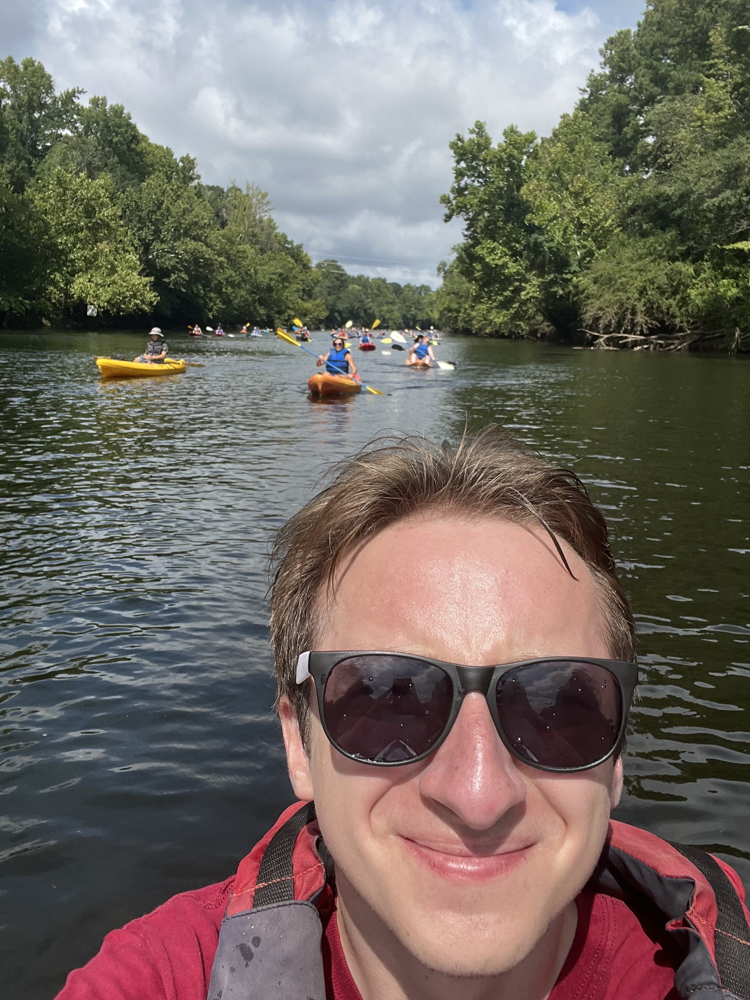
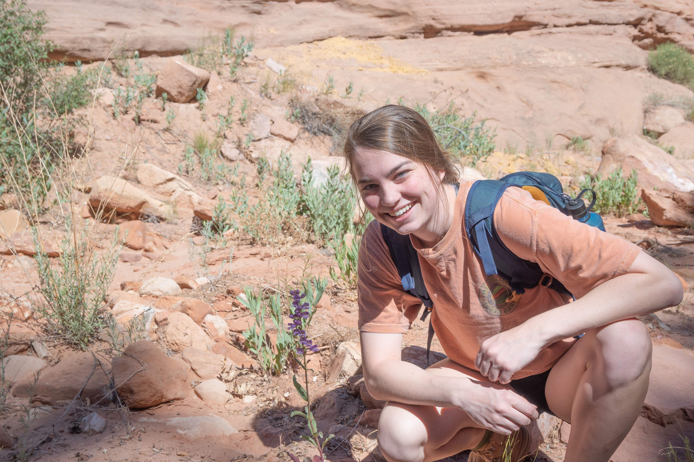

Alumni - Wessinger Lab
Alumni

Ben Stone
Ben was an NSF Postdoc Fellow in the lab from 2021-2025. His work focuses on hybridization and transitions to hummingbird pollination in the Dasanthera clade of Penstemon. Outside of the lab, Ben likes exploring nature and playing music. Ben joined the lab in the Fall of 2021. Ben started as an Assistant Professor in Fall 2025 at Mississippi State University!

Josh Stevens
Josh was a PhD student in the lab from 2020-2025. His dissertation focused on describing mechanisms of flower color variation in a natural penstemon hybrid zone. In addition, he developed dissertation work focused on teaching pedagogy.

Ella Forrester
Ella worked in the lab as an undergraduate student from the fall of 2023 to the fall of 2024. She is a Public Health major and is enrolled in the Honors College. Within the lab, she worked with Trinity on the function and genetic basis of personate Penstemon flowers.

Albert Hatton
Albert was an Honors College student that joined the lab in Fall 2022 and received his B.Sc in Fall of 2024. Albert’s honors thesis focused on identifying the pigments underlying flower color variation in natural penstemon hybrid zones.

Hoyt Williams
Hoyt was an undergrad researcher from April 2021 to May 2022, when he graduated from U of SC with a BS in Biology. He then worked in the lab as a research technician until Summer 2024. His contributions to the lab cannot be overstated - he helped move every project in the lab forward.

Luke Wheeler
Luke was a postdoc in the lab from Fall 2022 - Summer 2024. He earned his PhD in Biochemistry at the University of Oregon, studying the evolution of binding specificity in the S100 proteins. His research in the Wessinger lab focused on studying adaptive introgression and floral trait evolution in the Habroanthus clade of Penstemon. He is currently an instructor in chemistry at Northglenn High School in Northglenn, Colorado.

Clayton Bellinger
aka Clay
Clay worked in the lab as an undergrad from Spring 2021 - Fall 2022. He keeps over 350 species of plants, many of which are featured on his instagram. He has a special interest in species that are uncommon or ethnobotanically significant. In the Wessinger Lab, he assisted with plant care, fieldwork, and benchwork. He likes to hike and he likes his pet fishes.

Alice Norton
Alice worked in the lab as an undergrad from Spring 2022 - Fall 2022. She was a valued member of field expeditions and, in the lab, developed methods for quantifying variation in anthocyanin pigment production. In her free time she likes to run triathlons.

Nimue’ Shive
Nim worked in the lab as an undergrad from Fall 2020 - Spring 2022. In the Wessinger Lab, she helped with plant care and to map Penstemon species ranges. She enjoys hiking, art, and chocolate cake.

Ashley Hamilton
Ashley worked in the lab from Aug 2020 - Aug 2021 as a lab technician. In the Wessinger Lab, her primary project involved analyzing the geographic distribution of Penstemon species to try to understand the underlying ecogeographic trends of pollination divergence.